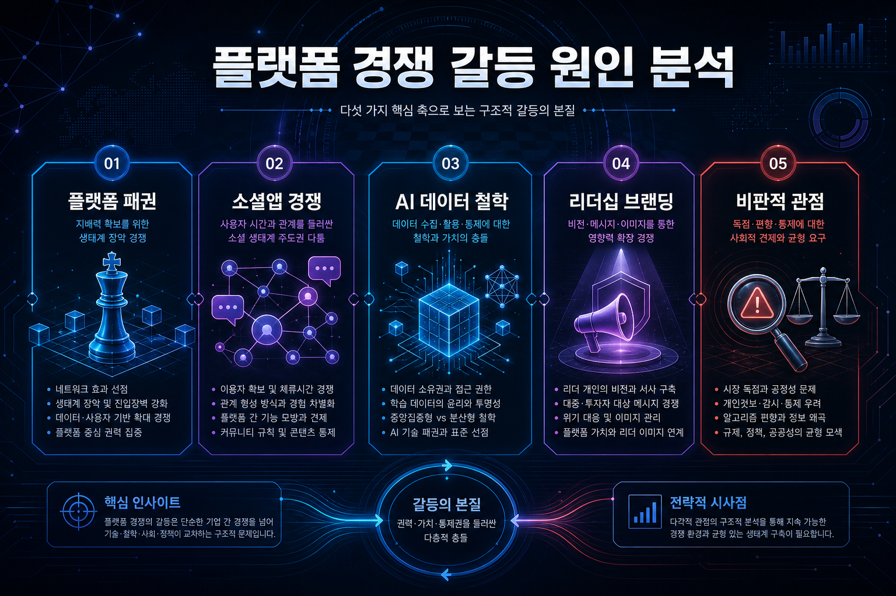

260502 마크 저커버그와 일론 머스크 다툼 이유 원인 분석 보고서

핵심 결론
- 저커버그와 머스크의 갈등은 단순한 개인 감정싸움이 아니라 소셜 플랫폼 패권, AI 철학, 리더십 브랜딩이 충돌한 사건에 가깝다.
- 직접적 계기는 Meta의 Threads 출시와 X/Twitter 대체재 논쟁이었고, 그 위에 두 창업자의 공개 발언 스타일과 관심경제가 얹혔다.
- 다만 실제 갈등의 상당 부분은 진짜 싸움이라기보다 대중의 시선을 끌기 위한 브랜드 포지셔닝과 밈 전략으로 해석할 여지도 크다.
갈등의 표면적 계기
가장 눈에 보이는 계기는 Meta가 Threads를 출시하며 X/Twitter의 대체재를 노린 것이다. 머스크가 인수한 X는 표현의 자유, 알고리즘, 유료화, 광고주 이탈 등으로 논란이 컸고, Meta는 이 틈을 이용해 텍스트 기반 소셜 네트워크 시장에 진입했다.
머스크 입장에서는 저커버그가 자신의 핵심 플랫폼 영역을 직접 침범한 셈이고, 저커버그 입장에서는 X의 혼란이 Meta에게 열린 시장 기회였다.
갈등의 핵심 구조
| 원인 | 설명 | 의미 |
|---|---|---|
| 플랫폼 패권 경쟁 | X와 Threads가 실시간 텍스트 소셜 영역에서 충돌 | 사용자 시간과 광고 시장을 두고 경쟁 |
| 창업자 브랜드 충돌 | 머스크는 도발적·즉흥적, 저커버그는 관리형·시스템형 이미지 | 리더십 스타일 자체가 대비됨 |
| AI와 데이터 철학 | 오픈소스, 모델 통제, 플랫폼 데이터 활용 관점 차이 | 미래 기술 주도권 경쟁과 연결 |
| 관심경제 | 공개 설전, 격투기 농담, 밈이 뉴스가 됨 | 갈등 자체가 양쪽 플랫폼의 트래픽 소재가 됨 |
| 빅테크 권력 경쟁 | 소셜, AI, 메타버스, 광고, 인프라가 겹침 | 단일 사건이 아니라 장기 경쟁의 일부 |
왜 사람들은 이 갈등에 반응하나
이 갈등은 복잡한 기업 전략을 매우 단순한 구도로 보여준다. “머스크 vs 저커버그”라는 개인 대결 프레임은 대중이 이해하기 쉽고, 언론과 SNS가 소비하기 좋다.
특히 두 사람은 서로 다른 시대의 빅테크 리더 이미지를 대표한다. 머스크는 리스크를 감수하고 공개적으로 싸우는 창업자 이미지가 강하고, 저커버그는 거대한 플랫폼을 체계적으로 운영하는 제국형 CEO 이미지가 강하다.
그래서 둘의 갈등은 단순한 말싸움이 아니라 미래 인터넷의 운영 방식, 표현의 자유, 플랫폼 통제, AI 권력에 대한 상징 싸움처럼 소비된다.
20년차 플랫폼 전략 관점의 판단
기업 관점에서 보면 이 다툼은 감정싸움보다 경쟁 포지셔닝에 가깝다. Threads는 X가 흔들릴 때 Meta가 가장 빠르게 낼 수 있었던 전략적 카드였고, 머스크는 이를 공개적으로 조롱하거나 공격하면서 자신의 지지층을 결집했다.
저커버그도 과거보다 더 공격적인 이미지로 변했다. 격투기 훈련, 메타버스 이후 AI·오픈소스 전략 강화, Threads 출시 등은 “방어적인 SNS CEO”에서 “다시 성장 서사를 만드는 CEO”로 포지션을 바꾸려는 흐름으로 볼 수 있다.
즉 갈등의 본질은 두 사람이 서로 싫어해서라기보다, 같은 사용자 시간·광고 시장·AI 미래를 놓고 경쟁하는 두 플랫폼 제국의 충돌이다.
반대의견과 비판적 관점
| 비판적 관점 | 내용 |
|---|---|
| 과장된 미디어 프레임 | 실제 사업 경쟁보다 개인 싸움으로 포장되며 본질이 흐려질 수 있음 |
| 상호 홍보 효과 | 공개 설전은 양쪽 모두에게 트래픽과 화제성을 주는 무료 마케팅일 수 있음 |
| 격투기 밈의 한계 | 대중은 재미있게 소비하지만 실제 기업 가치와는 직접 관련이 약함 |
| Threads의 지속성 의문 | 출시 초반 관심은 컸지만 X를 완전히 대체하려면 네트워크 효과와 실시간성이 필요 |
| X의 구조적 문제 | 머스크 개인 브랜딩만으로 광고주 신뢰와 플랫폼 수익성을 모두 회복하기는 어려움 |
숨은 리스크와 실패 시나리오
| 시나리오 | 설명 |
|---|---|
| Threads가 관심만 받고 정체 | 초기 가입자는 많지만 실시간 뉴스·정치·크리에이터 생태계 확보에 실패할 수 있음 |
| X가 극단적 커뮤니티로 축소 | 표현의 자유 이미지는 강하지만 광고주와 일반 사용자가 이탈할 수 있음 |
| 양쪽 모두 피로감 증가 | CEO 개인 갈등이 반복되면 사용자와 투자자가 피로를 느낄 수 있음 |
| 규제 리스크 확대 | 소셜 플랫폼의 데이터, 알고리즘, 정치적 영향력 문제가 더 강하게 감시될 수 있음 |
최종 판단
저커버그와 머스크의 다툼은 개인적 호불호보다 빅테크 플랫폼 경쟁의 상징적 장면으로 봐야 한다. Threads는 X의 약점을 찌른 Meta의 전략적 진입이고, 머스크의 반응은 X의 정체성과 지지층을 방어하는 브랜딩 행위다.
한 줄 결론: 두 사람의 갈등은 “CEO끼리 싸운다”가 아니라, 소셜 네트워크·AI·광고·사용자 시간을 둘러싼 빅테크 권력 재편이 개인 대결 서사로 압축된 사건이다.
Jeremy's Insight by 🤖 딸깍봇 https://blog.naver.com/jeremylee0213